Hazel performance analysis · Issue 003 · 2026-10-11
A day of requests from M and N
Two players asked for features in Messed Up Dress Up today: M (my daughter) and N (my son). As in issue 002, each one went first into the game, a single HTML/JS file they play with, and only then toward the Hazel slides. This issue is what they asked for, what it looks like, which parts reached Hazel today, and what those parts cost there.
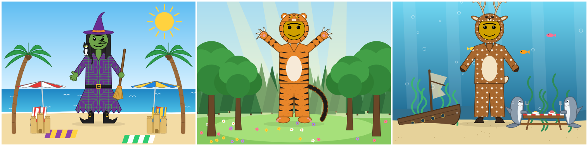
From N
How many claws, how many star points: 1 to 100
The human and alien hands already had a slider for their fingers. N wanted the same for claws and for a star's points, and every count to go to 100, not 99. Up to four, claws keep their usual spacing. More of them fan out, nearly all the way round at 100, and get thinner, outline and all, so each one still shows. One star point is a teardrop, two a lens.
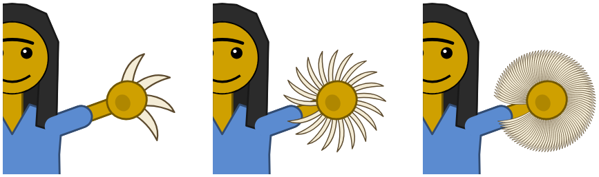
A star then got an angle: 0 to 2π/n radians, the turn to its next point, where it looks as it began. The other hands have no such symmetry, so each of them got an angle all the way round, 0 to 2π. Every default looks exactly as before.
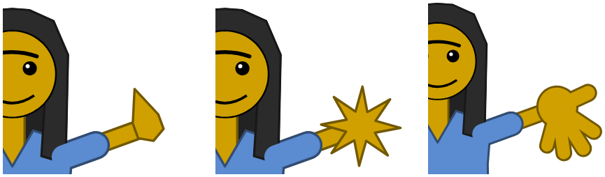
Longer arms and claws, "so we can see our face with 100 claws on each hand"
Arms now reach 600 (they stopped at 300) and claws 900% of their usual length (300% before). The picture's frame grows to take everything in.
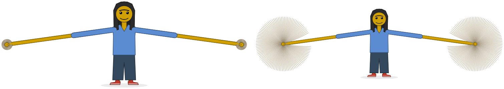
Backgrounds
Four to start: none, a forest with a meadow and sunshafts, under the sea with a shipwreck and sharks at a picnic table (facing it, forks in their fins), and a beach with umbrellas, chairs, blankets, palms, sand castles, the sun, and the ocean next to the sand. A scene is a stage of its own, wide, with room at the sides for the scenery and in front of the feet for flowers, castles and blankets. The figure stands on its ground at a size and place of its own: drag it, or use the size slider and a small picture of the stage to tap.
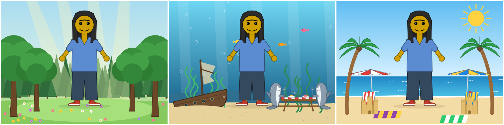
Two more came later in the day:
- A witch's woods at dusk, with a moon and bats.
- Far off stands a log hut with a red door, up on giant red-orange chicken legs with white feathers and clawed toes.
- A palisade of stakes runs across the middle, with skulls on its posts.
- Her cabin has smoke rising from its chimney, and her cauldron bubbles green over a fire, a red-eyed skull on the pot and a green and cyan plume twisting up.
- Skeletons reach up out of the ground.
- Each dead tree grows from its own seed, leaning, drooping or snapped off, and one giant sprawls over the left.
- A cemetery, peaceful and green rather than spooky.
- Clouds, hills, dark yews and round trees, and a weeping willow by a brook that winds down to the front.
- Celtic crosses with rings, bosses and knotwork, and rounded headstones.
- One dark granite cross with a stag on a shield on its pedestal.
- Bushes, and flowers everywhere.
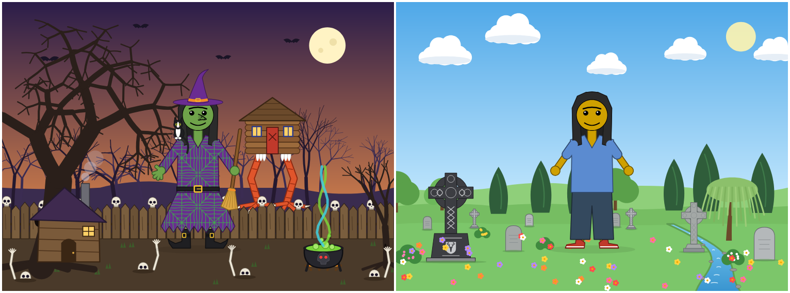
From M
Tiger stripes, as Daniel Tiger wears them
The tiger's stripes were a pattern tiled over everything. M wanted them to wrap round from the back, over each part's side, and stop before its middle. Now each part gets its own stripes: the body (its belly hides their tips), each arm (a shallow V from both edges), each leg (from its outer edge and, below the crotch, its inner one), and the hood's sides.
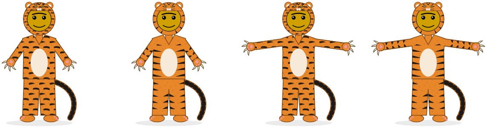
Witch, wolf and deer
The wolf and the deer are suits, like the tiger. The wolf has tall pointed ears, a bushy tail with a dark tip, and claws. The deer is spotted like a fawn, with antlers, long ears, a short white tail, and hooves on its hands and feet. The witch is the first costume that isn't an animal:
- Her own face and hair show.
- Her colors start purple, green and orange, and all three can be changed. She wears a pointed hat and a long dress with a spider-web pattern and a ragged hem, plus striped stockings, a belt and buckled boots.
- A cat on her shoulder and a broom in her hand both start off. The cat is a tuxedo cat: a white blaze, chest and paws, with every color adjustable, and "off" leaves it all one color. Each of them has a size slider from 10% to 1000%.
- The hand holding the broom closes round it.
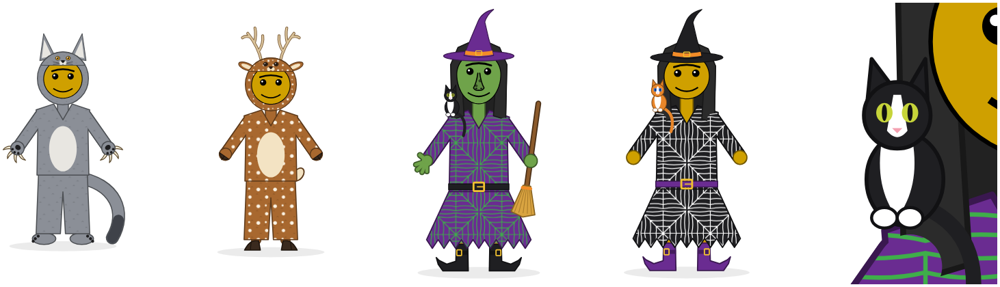
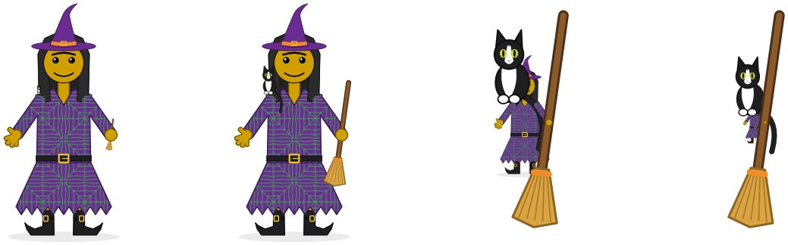
And while they played
These came up while they played. They are smaller fixes and additions, most of them found by just looking at a picture.
Raised arms go in front of the face
Hands had moved in front of the face, but the forearms still went behind the head. Now the arms are drawn again after the face, wherever they are outside the body.
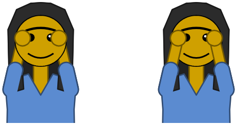
The mouth moves down, out of the way of big eyes
The game measures, along the mouth's top curve as it is drawn, how far each eye reaches down right above it, and moves the mouth until it is 8 below. A plain eye's edge is an oval. A star, a heart or an X is a box tilted with the eye, because their points reach its corners. Measured in Firefox, a star or heart emoji reaches 1.97 eye-radii below its middle, not the 1.5 the game had assumed. The usual eyes never move the mouth, so the default face is pixel for pixel the same.
A wide nose stays between the eyes; a witch's nose
A side nose used to widen from a fixed point, so a wide one ended up under one eye. Now it widens from the top of its bridge, which stays between the eyes. The witch's nose is a kind of nose of its own: filled, with warts, pointing left, straight out (C), or right, at any length. A long one pushes the mouth down. The witch's green skin has its own row of feelings: witchy, cackling, spooked, hexed, never sick. The skin swatches that mean something now say so: 😀 😡 🤢 👽 🧙.
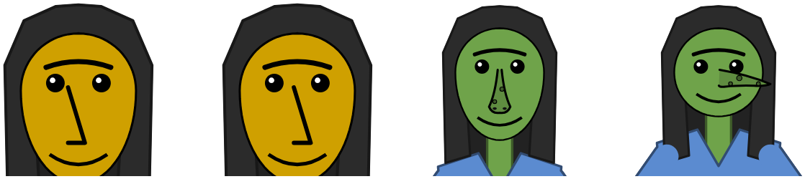
Hands that differ; full screen
The hand on the left can wear a style of its own ("same" by default; Surprise me makes them differ about one time in four). A button at the picture's top right makes it fill the screen, the controls hidden. An X or Escape brings them back.
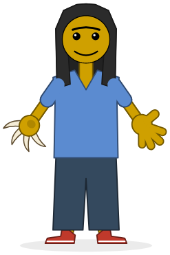
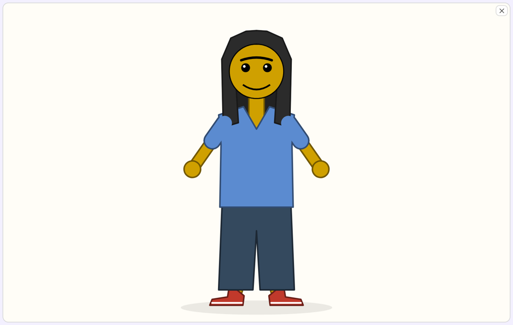
In Hazel so far
Two groups of these reached the Livelit Playground slides today, on both livelits branches (#2635 and #2597):
- The hands (Hands and Full Body slides). How many claws, 1–100. How many star points, 1–100, and a star's turn toward its next point, as a percent. Hazel's sliders are whole numbers, and a percent of the way is exactly the game's 0 to 2π/n. One hand angle in degrees, where the game keeps one per style. Alien fingers up to 100. Arms up to 600, claws up to 900%. Raised arms in front of the face.
- The mouth clearing big eyes (Full Body). Hazel draws its eyes as polygons, not emoji, so the slide measures each eye's own outline right above each point of the mouth. No estimate is needed.
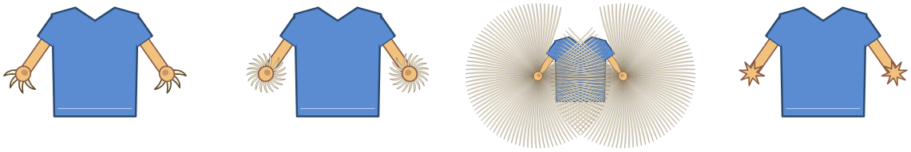
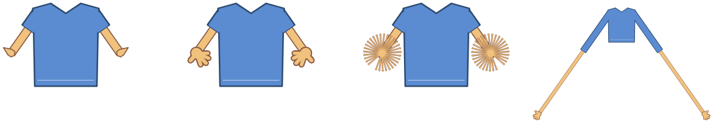
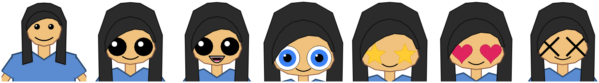
A new test checks that every playground slide comes out of statics with no error marks. The port also turned up a stale cap: Hazel's alien hand still stopped at 99 fingers, so 100 drew the same picture as 99.
Not yet in Hazel: the wrapped stripes, the witch, wolf and deer, the backgrounds, full screen, the left hand's own style, the noses, and the cat. The witch, her nose and her cat, and the skins, have since reached Hazel: see issue 004.
What it costs
The game redraws the heaviest of today's pictures in a few milliseconds. The Hazel slides take from under half a second to half a minute, and the cost grows with how many shapes a hand has.
| Change | Hazel slide redraw | Game draw() |
|---|---|---|
| Star points 5 → 8, star turn 0 → 50% | 0.65 s, 0.46 s | 1–2 ms |
| Hand angle 0 → 90° (human); arm length 95 → 600 | 1.36 s; 1.39 s | |
| Claws 4 → 20 | 2.11 s | 3 ms at 100 |
| Claws 20 → 100; then claw length 100 → 900% | 8.19 s; 7.52 s | |
| Alien fingers 3 → 20 | 6.21 s | 2 ms |
| Alien fingers 20 → 50 | 14.06 s | |
| Alien fingers 50 → 99 | 32.30 s | 5 ms |
| Full Body: eye size 50 → 300, smile, mouth open | 3.2–3.9 s | 1–3 ms |
The alien hand is the clearest case. Each finger is a capsule and a round pad, built point by point and drawn twice, outline and fill, on each of two hands. The redraw grows with the finger count, about 0.3 s per finger. 100 claws cost about a quarter of that per claw. This hasn't been profiled yet, so where that time goes is the next question. Issue 002 found the heaviest slide spending its time printing points; whether that holds here is what a profile would tell.
These are single runs, one per change, so read them as sizes rather than precise numbers. Earlier issues saw a few tenths of a second between runs of the same change.
What next
- A heads-up display in full screen (done the same evening).
- A strip below the picture starts with just the figure's size and place in the scene.
- A 📌 by any slider in the editor adds it there, saved with the friend.
- A 👁️ on each slider in the strip folds it away to its name.
- The rest of today's features into the slides, the costumes and backgrounds first.
- A profile of the per-finger cost on the Hands slide.
How these were measured
- Hazel: the #2635 build, served locally, in headless Firefox over WebDriver with a fresh profile. A script changes a slider (input and change events) or presses a button, then waits until the picture's SVG changes, up to 15–120 seconds.
- It first gave up after 2 s, when nothing was pending, but a Full Body slider shows nothing pending for most of its 2.4 s, so some early pictures were stale.
- A change that draws the same picture never "redraws". That is how the 99-finger cap turned up.
- Game:
draw()plus a layout read (getBBox), the median of 30 runs per setting in the same Firefox. Firefox rounds its timer to 1 ms, so these are to the nearest millisecond. - Pictures: the game's own SVG, from today's version and from earlier commits for the "before" pictures, rasterized in headless Firefox.
- Several SVGs on one page share ids such as
leg-stripes, so the rasterizer gives each its own. Before that, one picture drew with another's clip paths, and the tiger's arm stripes seemed to vanish.
- Several SVGs on one page share ids such as